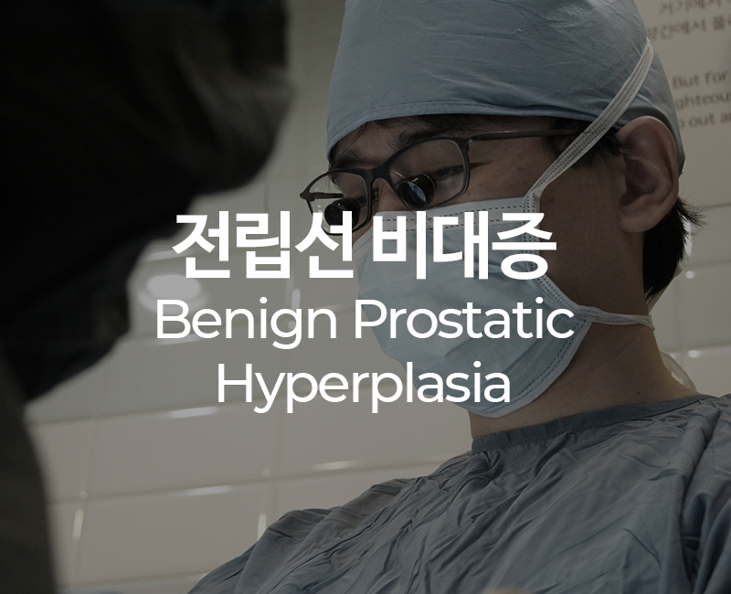

PROSTATE CLINIC · LANDING 02
전립선 클리닉 (HoLEP · 유로리프트)
전립선비대증의 근본적 수술 치료인 HoLEP, 비절개 결찰술 유로리프트부터 전립선염·전립선암·전립선통까지 단계별 맞춤 진료를 제공합니다.
전립선비대증의 근본적 수술 치료인 HoLEP, 비절개 결찰술 유로리프트부터 전립선염·전립선암·전립선통까지 단계별 맞춤 진료를 제공합니다.
연령 증가와 호르몬 변화로 전립선이 커지면서 요도를 압박해 세뇨, 빈뇨, 야간뇨, 잔뇨감을 유발합니다. 방치할 경우 방광 기능 저하로 이어질 수 있어 조기 진단이 중요합니다.

전립선의 크기, 연령, 기저질환 및 성기능 보존 희망 여부에 따라 HoLEP 또는 유로리프트를 선택합니다.
비대해진 전립선 조직을 내시경 하에서 레이저로 정교하게 분리·적출하는 수술로, 큰 전립선에서도 출혈과 재발 위험을 낮추며 발기부전 동반 시 3-Piece 음경임플란트와 Combi-Operation이 가능합니다.
전립선 조직을 절제하거나 태우지 않고 특수 결찰사로 고정해 좁아진 요도를 넓혀주는 최소침습 시술로, 사정 기능 보존과 빠른 회복을 원하는 환자분께 적합합니다.
만성적인 회음부 불쾌감과 배뇨통을 유발하는 전립선염·전립선통 및 PSA 기반 전립선암 정밀 선별검사를 시행합니다.